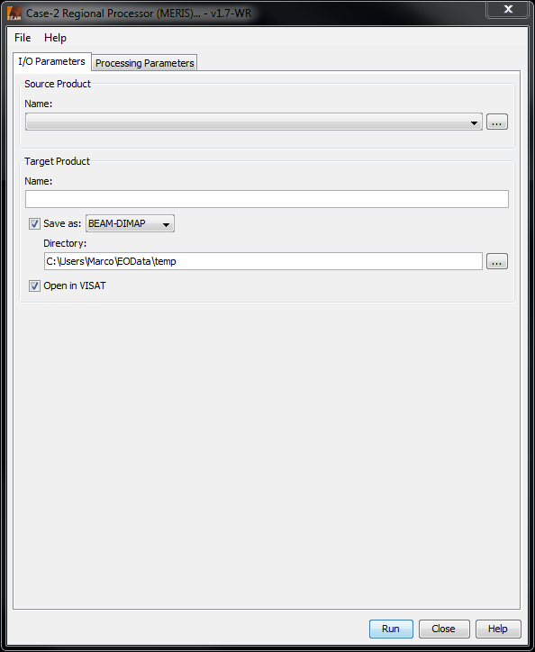
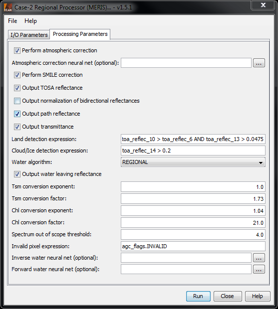

| MERIS Case-2-Water Processor Description | |
Please note: The chapter Data Processors - Introduction provides a general description for all BEAM data processors. It describes the common graphical user interface (GUI), the command-line interface and the common processing request file format.

Name: Used to select the spectral source product. The source product shall contain spectral bands providing a source spectrum at each pixel. Use the ... button to open a data product currently not opened in VISAT.
Name: Used to specify the name of the target product.
Save to: Used to specify whether the target product should be saved to the file system. The combo box presents a list of file formats, currently BEAM-DIMAP, GeoTIFF, and HDF5.
Open in VISAT: Used to specify whether the target product should be opened in VISAT. When the the target product is not saved, it is opened in VISAT automatically.

Perform atmospheric correction:
Enables or disables the atmospheric correction. If the correction is disabled the source product must already be
atmospherically corrected and contain reflectance bands ("reflec_#").
Atmospheric correction neural net (optional):
The neural net to be used for the atmospheric correction. If it is not specified the default value will be used.
Only enabled if atmospheric correction is enabled too.
Perform SMILE correction:
Whether to perform a SMILE correction or not. Only enabled if atmospheric correction is enabled too.
Output TOSA reflectance:
Whether to add TOSA reflectance bands to the target product or not. Only enabled if atmospheric correction is
enabled too.
Output water leaving reflectance:
Whether to add water leaving reflectance bands to the target product or not. These are either computed by the
atmospheric correction or are provided by the source product.
Output water leaving reflectance as:
Specifies if the water leaving reflectance are given as radiance reflectance or irradiance reflectance.
Output path reflectance:
Whether to add path reflectance bands to the target product or not. Only enabled if atmospheric correction is
enabled too.
Output transmittance:
Whether to add transmittance bands to the target product or not. Only enabled if atmospheric correction is enabled
too.
Output Kd spectrum:
Whether to add a Kd spectrum to the target product or not.
Output normalised bidirectional reflectances:
Whether to add normalised reflectance bands to the target product or not. Only enabled if atmospheric correction is
enabled too.
Output A_Poc:
Whether to add A_Poc band to the target product or not. Currently not implemented. The resulting band will be empty.
Land detection expression:
An expression to detect land pixels. Only enabled if atmospheric correction is enabled too.
Cloud/Ice detection expression:
An expression to detect cloud/ice pixels. Only enabled if atmospheric correction is enabled too.
Use climatology map for salinity and temperature:
For salinity and temperature a climatology map is used if enabled. Otherwise the specified average values are used
for the whole scene.
Output salinity and temperature bands:
Whether to output salinity and temperature bands with the values used for the processing.
Average salinity:
The average salinity value used for the processing.
Average temperature:
The average salinity value used for the processing.
Tsm conversion exponent:
Tsm conversion factor:
Factors for converting particle scattering into total suspended matter dry weight.
tsm (g m-3) = tsmConversionFactor * b443^tsmConversionExponent
Spectrum out of scope threshold:
The out of scope (= out of training range) flag will be set if the chi2 value is above the given threshold.
Invalid pixel expression:
An arithmetic expression which defines the valid pixels for the processing. Pixels which are not valid
are skipped by the processor.
Alternative inverse water neural net (optional):
Path to the neural network file for the inverse model (reflectances, geometry --> concentrations).
Alternative forward water neural net:
Path to the neural network file for the forward model (concentrations, geometry --> reflectances).